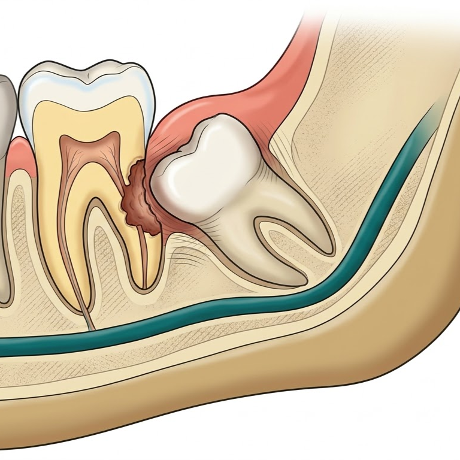
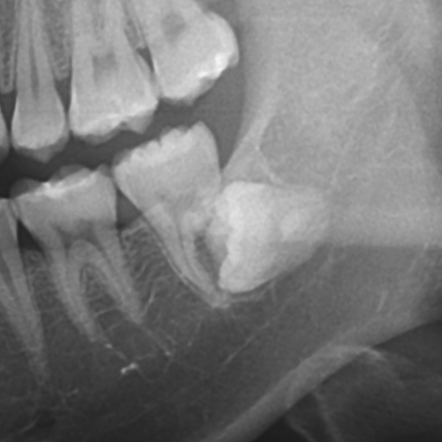
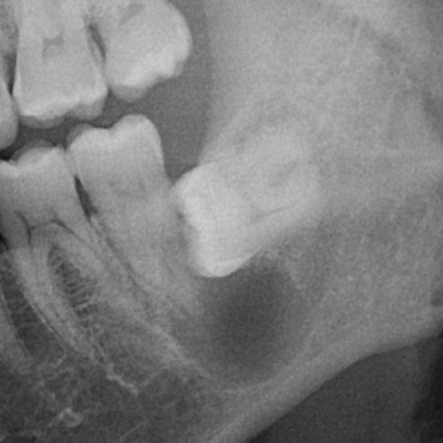

증상 없이 진행하는 합병증
파노라마에서만 보이는 위험들
자각 증상이 없어도 매복 사랑니는 조용히 인접 치아와 뼈를 손상시킵니다. 카드를 클릭하면 실제 임상 사례를 확인할 수 있습니다.

Root Resorption
인접치 치근 흡수
클릭해서 임상 사례 확인

🦷 인접치 치근 흡수 (Root Resorption)
근심경사·수평 매복 사랑니가 제2대구치 치근을 만성 압박합니다.
수년간 무증상으로 진행하다 우연히 파노라마에서 발견됩니다.
심한 경우 M2도 발치해야 하며, 조기 발견이 핵심입니다.
↩ 다시 클릭해서 닫기

Dentigerous Cyst
함치성 낭종
클릭해서 임상 사례 확인

🫧 함치성 낭종 (Dentigerous Cyst)
매복치 치관을 둘러싸는 낭종입니다. 5~10년간 무증상으로 팽창하며
주변 골을 파괴합니다. 거대 낭종은 하악골 골절 위험까지 동반합니다.
조기 파노라마 검진으로만 발견 가능합니다.
↩ 다시 클릭해서 닫기